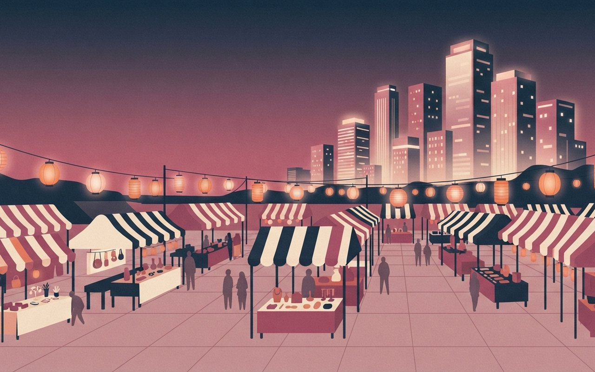
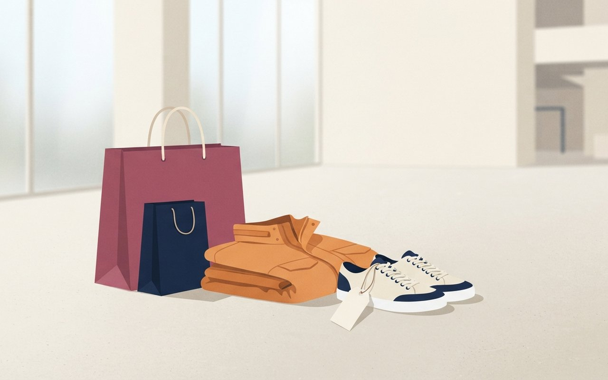
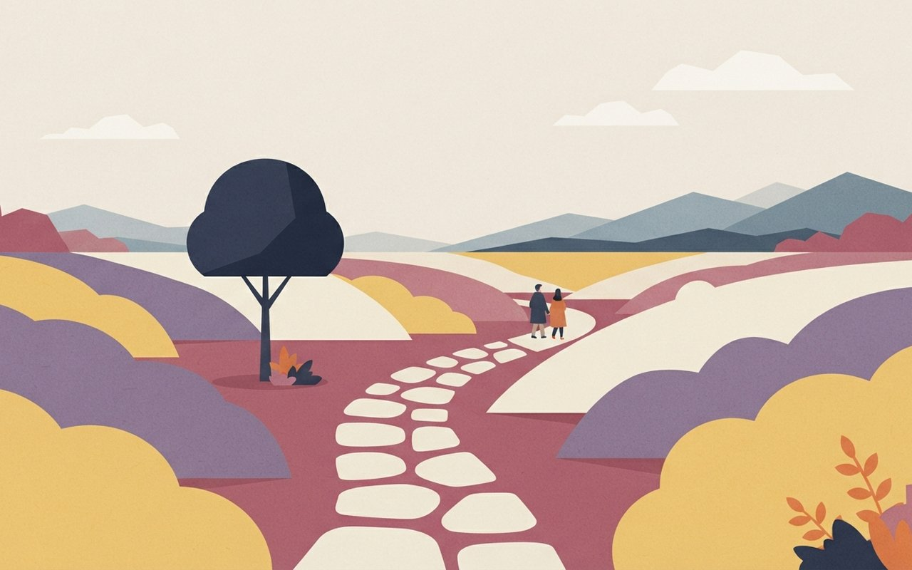
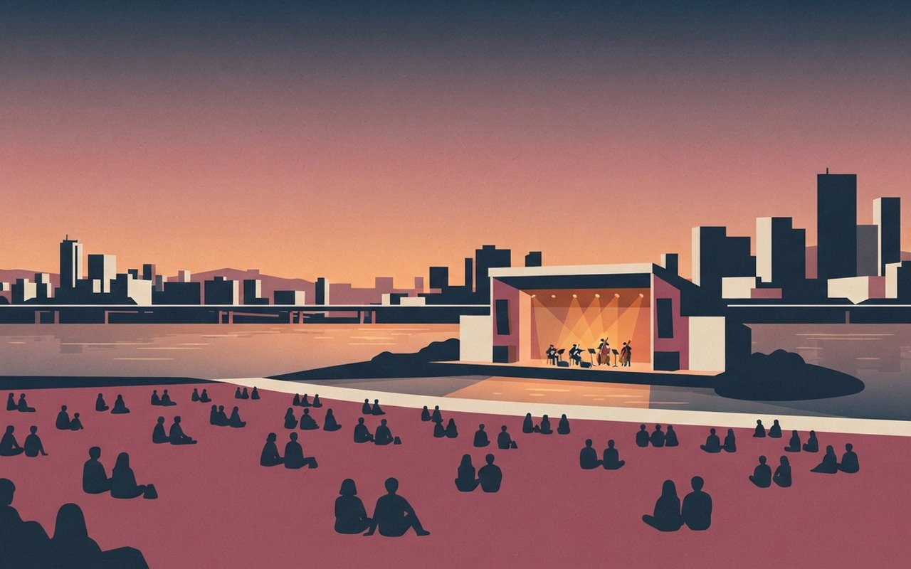
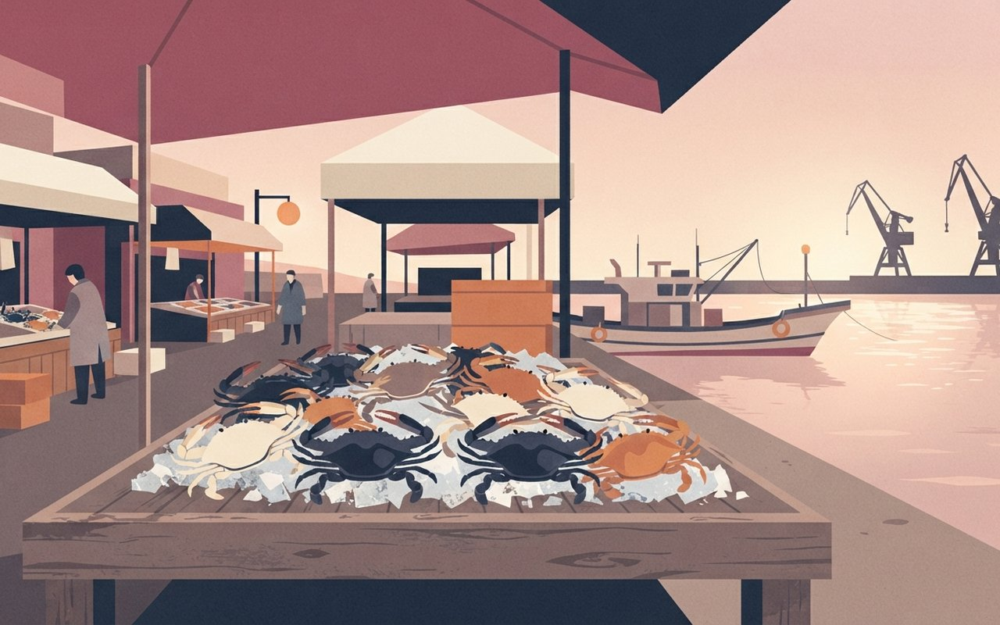

이번 주말에는 태풍 '참피'의 영향으로 토요일 전남·경남·제주, 일요일 충청 이남에 비가 예보됐습니다. 대구에는 전국 떡볶이 37곳이 모이고, 서울 청계광장에는 7년 만에 마켓페어가, 노들섬에서는 무료 음악 축제가 열립니다. 아울렛 슈퍼새터데이, 함평 국화 축제, 인천 꽃게 축제까지 모았고, 11월 김장 예약도 미리 알립니다.
🎧 낭독 원고 보기
10월 22일 목요일, 액티비티 브리프입니다. 이번 주말 가볼 만한 곳을 소개합니다.
이번 주말, 전국 떡볶이 37곳이 대구에 모입니다. 연예인도 줄서기도 없는 떡볶이 축제입니다.
청계광장에는 7년 만에 서울마켓페어가 돌아옵니다. 낮에는 시장, 밤에는 달빛 DJ쇼입니다.
아울렛 슈퍼새터데이는 판매가에서 최대 30%를 더 깎아 줍니다.
함평 국향대전이 시작됩니다. 국화분재만 366점입니다.
토요일 노들섬에서는 권진아, 폴킴이 무료 공연을 합니다.
인천 연안부두에서는 오후 2시부터 5시까지 꽃게가 반값입니다.
임실 김장체험 예약은 11월 6일까지입니다.
태풍 영향으로 주말 남부와 충청에 비 예보가 있으니 출발 전에 확인하세요. 자세한 정보는 카드에서 확인하세요.
이번 주말 날씨 — 태풍 '참피'의 영향으로 토요일(24일)은 제주·전남·경남권에 비가 오고, 일요일(25일)은 비가 충청권과 남부지방·제주로 넓어져 26일 오전까지 이어질 전망이다(이데일리 10/21 12:07, 뉴스핌 10/21 14:03). 태풍 진로가 유동적이라 비 구역과 시점은 바뀔 수 있다. 두 기사에 기온은 없다. 호남·영남 행사는 우천 대비를 하고 출발 전에 확인 ⚠ 변동 가능.
Food — 대구
餠
전국 떡볶이
전국 떡볶이 37곳이 대구로 — 연예인도 줄서기도 없앤 '떡페' 10/23~25
10월 23일부터 25일까지 3일간 대구 북구 iM뱅크PARK 일원에서 떡볶이 페스티벌이 열린다. 9개 시·도의 떡볶이 37곳이 참가한다. 대구 15곳, 서울 8곳(떡산·악어떡볶이·금미옥), 경북 영주·경주·포항 각 3곳이 중심이고 부산 '다리집', 제주 '명랑스낵', 강원 '속초러브마린' 등도 온다(경북매일).
올해는 공식행사·연예인 출연·줄서기를 없애고 "떡페에서는 떡볶이가 연예인"이라는 콘셉트로 연다. 한정 메뉴로 방송에 나온 '짚불떡', 크리에이터 '떡볶퀸'이 개발한 메뉴, 반올림피자 한정판 피자 떡볶이가 있다. 지역 특산물 메뉴로는 속초 홍게떡볶이, 서울 콩나물떡볶이, 대구 막창떡볶이를 비교해 먹을 수 있다.
기간·장소10/23(금)~25(일) · 대구 북구 iM뱅크PARK 일원
참가9개 시·도 떡볶이 37곳 (대구 15 · 서울 8 · 경북 영주·경주·포항 각 3 등)
한정 메뉴짚불떡 · 떡볶퀸 개발 메뉴 · 반올림피자 피자 떡볶이
시간·요금기사에 없음 — 공식 안내 확인 권장 ⚠ 변동 가능
🎨 알고 가면 달라지는 것
대구 북구의 '대구 맛볼지도'는 대구에서 쓴 영수증을 축제장에서 보이면 소비 금액의 10%를 떡볶이 구매 쿠폰으로 돌려준다. 사전 신청이 필요하다. 이 혜택의 운영 기간과 축제 공식 프로그램 여부는 기사에 없으니 먼저 확인한다.
경북매일 — 참가업체·콘셉트경북매일 — 대구 맛볼지도경북매일(10/12 16:45 등록, 9/28 16:32 등록) · 단일 매체 · 운영 시간·입장료는 두 기사 본문에 없어 적지 않음 · 주말 영남 비 가능성은 위 날씨 안내 참고 (확인 2026-10-22)
전국 떡볶이 37곳이 대구로 모인다
10월 23~25일 대구 북구에서 열려요. 9개 시·도 떡볶이 37곳이 참가하고, 올해는 연예인 출연과 줄서기 없이 떡볶이가 주인공이에요.
대구
9개|참여 시·도
10/23~10/25
A table full of colorful Korean tteokbokki in paper cups with chopsticks, steam rising, warm festival string lights behind
Market — 서울
市
청계광장 장터
7년 만의 서울마켓페어 — 낮엔 시장, 밤엔 야장 10/24~25 청계광장
서울마켓페어가 7년 만에 10월 24일과 25일 청계광장 일대에서 열린다. 시간은 10시부터 21시까지(예정)다. 낮에는 전통시장·골목상권 상품을 팔고 전통문화 체험을 하고, 밤에는 공연과 야간경관, 달빛 DJ쇼가 이어진다(서울신문·서울시).
참여 시장은 남대문(중구), 백년(강북), 대조(은평) 등이고, 상봉먹자골목(중랑)·샤로수길(관악) 등 약 40개 점포도 참여한다. 체험은 자개 액세서리, 때수건, 펜 꾸미기 공방, K푸드 키링, 캐리커처, 페이스페인팅이 있다.
기간·장소10/24~25 10:00~21:00(예정) · 청계광장 일대
낮전통시장·골목상권 상품 판매 · 전통문화 체험
밤공연 · 야간경관 · 달빛 DJ쇼
체험자개 액세서리 · 때수건 · 펜 꾸미기 · K푸드 키링 · 캐리커처 · 페이스페인팅
요금·예약기사에 없음 — 서울시 공식 안내 확인 권장 ⚠ 변동 가능
🎨 알고 가면 달라지는 것
같은 청계광장에서 낮에는 시장 장보기와 공방 체험을, 저녁에는 야장과 달빛 DJ쇼를 즐겨 하루 동선을 둘로 나눌 수 있다.
서울신문 — 구성·참여 시장서울시 — 일시·장소 안내서울신문(10/19) · 서울시 안내 페이지(발행일 미표기) · 서울시 발표를 바탕으로 한 보도라 사실상 시 발표 단일 · 입장료·예약은 기사에 없음 (확인 2026-10-22)
7년 만에 돌아온 서울마켓페어
10월 24~25일 청계광장에서 열려요. 낮에는 전통시장 상품과 공방 체험을, 밤에는 공연과 달빛 DJ쇼를 즐길 수 있어요. 시간은 10시~21시예요.
10/24~10/25
서울
A lively city plaza market at dusk with striped stalls, hanging lanterns and handmade craft tables, skyscrapers glowing behind in Seoul

Deal — 쇼핑
割
아울렛 4일
아울렛판 블랙프라이데이 — 슈퍼새터데이, 아울렛 판매가에 최대 30% 추가 할인
신세계사이먼의 '슈퍼새터데이'가 10월 23일부터 26일까지 4일간 여주·파주·부산·시흥·제주 프리미엄 아울렛에서 열린다. 아울렛 판매가에서 최대 30%를 추가로 깎아 준다(파이낸셜뉴스).
브랜드별로 나이키는 전 품목 20%(2개 이상 사면 30%), 뉴발란스·스케쳐스·컬럼비아는 20%, 네파·내셔널지오그래픽은 10%, 막스마라·브루넬로 쿠치넬리·바버·A.P.C는 20%다. 점포별로 여주는 포터리 아카이브 세일(최대 50%)과 만석닭강정 팝업, 파주·부산·시흥은 스케쳐스 패밀리 세일(최대 70%), 부산은 핑크퐁 아기상어 해피 피크닉 팝업이 있다. 24~25일 주말 오후에는 점포별 버블쇼·벌룬쇼가 열린다.
점포별여주 포터리 아카이브 최대 50% · 파주·부산·시흥 스케쳐스 최대 70% · 부산 핑크퐁 팝업
주의할인율은 브랜드·품목별로 다름 ⚠ 변동 가능, 점포 공지 확인
브랜드별 추가 할인율 (%) · 나이키는 2개 이상 구매 시 30%
막대 길이는 0에서 시작해 30 : 20 : 20 : 10 비율로 그렸다. 출처: 파이낸셜뉴스
🎨 알고 가면 달라지는 것
나이키는 2개 이상 사면 20%에서 30%로 올라간다. 겨울 외투가 목적이라면 컬럼비아(20%)와 네파(10%)처럼 할인율이 두 배 차이 나니 비교해 본다. 기사의 할인율 표를 바탕으로 한 요약이다.
파이낸셜뉴스 — 슈퍼새터데이 할인·점포별 행사파이낸셜뉴스(10/21 10:19) · 단일 출처(기업 보도자료 기반) · 점포 소재지(시·군·구)는 기사에 없어 적지 않음 · 막스마라 등 브랜드는 일부만 적음 (확인 2026-10-22)
아울렛판 블프 슈퍼새터데이
10월 23~26일 여주·파주·부산·시흥·제주 아울렛에서 열려요. 아울렛 판매가에서 최대 30%를 추가로 깎아 주고, 나이키는 2개 이상 사면 30%예요.
30%|최대 추가 할인
10/23~10/26
A still life of stylish shopping bags, a folded winter jacket and sneakers with a blank paper sale tag on a bright showroom floor

Flower — 전남 함평
菊
국화 동산
신화의 국화동산 — 함평 대한민국 국향대전 10/23~11/8, 사전예매 할인은 오늘까지
함평 대한민국 국향대전이 10월 23일부터 11월 8일까지 17일간 함평엑스포공원 일대에서 '신화의 국화동산'을 주제로 열린다. 기사는 성인 개인 6,300원, 20인 이상 단체 5,400원을 사전예매 입장권 가격으로 소개한다(정상 관람료는 기사에 없음). 사전예매(NOL·네이버) 10% 할인은 9월 23일부터 10월 22일, 오늘까지다(위키트리).
국화분재 366점과 복조작 1,800여 점(5개 분재전시관)을 보고, 테마 조형물 '신화의 언덕'·'말하는 나무'·'물의 여신'이 서 있다. 여신옷 입어보기, 바나나 따기, 국화공예품 만들기, 국화차 시음 체험이 있고 브라스밴드 거리공연과 한국 명인명무전도 열린다.
기간·장소10/23~11/8(17일) · 함평엑스포공원 일대 · 주제 '신화의 국화동산'
입장료사전예매 입장권 성인 개인 6,300원 · 20인 이상 단체 5,400원 · 정상 관람료는 기사에 없음 — 공식 안내 확인
사전예매NOL·네이버, 10% 할인 9/23~10/22(오늘 마감)
볼거리국화분재 366점 · 복조작 1,800여 점 · 조형물 3종
날씨토요일 전남은 비 예보 ⚠ 우천 대비 필요, 변동 가능
🎨 알고 가면 달라지는 것
사전예매 할인은 22일 오늘까지다. 6,300원은 기사가 사전예매 입장권 가격으로 소개한 값이라 현장 요금은 공식 안내로 확인한다. 토요일 전남에 비가 예보돼 있으니 일요일 일정이나 우천 대비 계획부터 세운다.
위키트리 — 기간·요금·예매위키트리 — 프로그램위키트리(9/23 10:07, 10/14 08:02 입력) · 같은 매체 2건 · 기간은 매일신문(10/16)과 일치하나 매일신문의 요금·규모 수치는 위키트리와 달라 쓰지 않음 · 가을음악회 등 날짜별 공연은 기사에 날짜가 없어 적지 않음 (확인 2026-10-22)
신화의 국화동산, 함평 국향대전 개막
10월 23일부터 11월 8일까지 열려요. 국화분재 366점을 볼 수 있고, 사전예매 10% 할인은 오늘이 마지막이에요. 복조작은 1,800여 점이에요.
10/23~11/8
함평
A vast autumn chrysanthemum garden in Korea with sculpted flower hills in yellow, purple and white, a topiary tree and a winding footpath

Music — 노들섬
音
노들섬 야외
노들섬에서 폴킴·권진아 — 무료 야외 서울뮤직페스티벌 24일 하루
서울뮤직페스티벌이 10월 24일 토요일 하루 노들섬 수변문화공원에서 열리는 무료 야외 음악 축제다. 출연은 추다혜차지스, 너드커넥션, 권진아, 옥상달빛, 폴킴, 김창완밴드다(서울신문).
노들섬 노들스퀘어에서 버스킹과 음악 토크쇼가 열린다. 공연 외에 한국대중음악상과 협업한 음반 전시와 청음 존도 운영한다. 시간표와 사전신청 방법은 기사에 없다.
일시·장소10/24(토) 하루 · 노들섬 수변문화공원
출연추다혜차지스 · 너드커넥션 · 권진아 · 옥상달빛 · 폴킴 · 김창완밴드
함께노들스퀘어 버스킹 · 음악 토크쇼 · 한국대중음악상 협업 음반 전시·청음 존
요금·시간표무료 · 시간표·사전신청은 기사에 없음 — 서울시 공식 안내 확인 권장 ⚠ 변동 가능
🎨 알고 가면 달라지는 것
무대 말고도 한국대중음악상과 협업한 음반 전시와 청음 존을 운영한다. 공연 사이에 들러 볼 만하다.
서울신문 — 출연진·프로그램서울신문(10/14) · 단일 출처 · 시간표·교통은 기사에 없어 적지 않음 · 야외 행사라 우천 시 변경 가능 (확인 2026-10-22)
노들섬에서 열리는 무료 야외 음악 축제
10월 24일 토요일 하루, 노들섬에서 열려요. 권진아·폴킴·옥상달빛·김창완밴드 등이 나오고 입장은 무료예요. 음반 청음 존도 있어요.
10/24
노들섬 수변문화공원 / 폴킴 · 권진아 · 김창완밴드
An open-air riverside stage at sunset on a small island in a Seoul river, stage lights, a crowd of silhouettes sitting on the lawn, city skyline behind

Seafood — 인천
蟹
꽃게 반값
오후 2~5시 꽃게 50% 할인 — 인천 연안부두 꽃게 축제 24~25일
인천 연안부두 꽃게 축제가 10월 24일과 25일 인천종합어시장 앞 행사장에서 열린다. 꽃게 50% 할인 판매는 양일 오후 2시부터 5시까지다(한국방송뉴스).
24일 오후 6시 개막식에 나미애·장민호, 25일 오후 6시 50분 폐막공연에 김시원·윤수현이 오른다. 꽃게라면 끓이기와 꽃게 무게 맞추기 체험, 사진 전시도 있다. 문의는 032-888-4241~3이다.
일시·장소10/24~25 · 인천종합어시장 앞 행사장
꽃게 할인50% 할인 판매 · 양일 14:00~17:00
공연24일 18:00 개막식 나미애·장민호 · 25일 18:50 폐막공연 김시원·윤수현
체험꽃게라면 끓이기 · 꽃게 무게 맞추기 · 사진 전시
문의032-888-4241~3 ⚠ 변동 가능
🎨 알고 가면 달라지는 것
할인 판매는 오후 2시부터 5시까지 세 시간뿐이다. 개막식이 24일 오후 6시이니 할인 시간대에 사고 저녁 공연까지 이어 가는 동선이 맞는다.
한국방송뉴스 — 일정·할인·공연한국방송뉴스(10/21 19:40, 22:24 수정) · 단일 출처 · 지난주 송파·대전 먹거리 행사와 성격이 비슷하나 지역·품목이 달라 선정 · 입장료는 기사에 없음 (확인 2026-10-22)
오후 2~5시 꽃게 반값, 연안부두 꽃게 축제
10월 24~25일 인천종합어시장 앞에서 열려요. 꽃게 50% 할인 판매는 이틀 모두 오후 2시부터 5시까지예요. 꽃게라면 끓이기 체험도 있어요.
10/24~10/25
인천
Fresh blue crabs piled on ice at a Korean harbor fish market stall at golden hour, a fishing boat and harbor cranes behind

Reserve — 임실 김장
漬
미리 예약 · 김장
김장체험 예약은 11/6까지 — 임실 아삭아삭 김장페스티벌 11/13~15
임실 아삭아삭 김장페스티벌의 김장체험 사전예약은 10월 19일에 시작해 11월 6일까지, 김장재료 판매 예약은 11월 27일까지다. 본행사는 11월 13일부터 15일까지 임실치즈테마파크 일원에서 열린다(뉴스핌).
절임배추 20kg과 양념 10kg 세트는 택배비 포함 19만 5천 원이고, 농업회사법인 임실앤양념㈜에서 직접 받으면 18만 7천 원이다. 수령은 택배 또는 드라이브스루 현장 수령 중 고를 수 있다.
예약김장체험 10/19~11/6 · 김장재료 판매 ~11/27
본행사11/13~15 · 임실치즈테마파크 일원
가격절임배추 20kg+양념 10kg 세트 19만 5천 원(택배비 포함) · 직접 수령 18만 7천 원
수령택배 또는 드라이브스루 현장 수령
주의예약 기간·가격은 변동 가능 ⚠ 공식 안내 확인
🎨 알고 가면 달라지는 것
직접 수령하면 택배비 8천 원이 빠진다. 현장 수령은 차 안에서 받는 드라이브스루 방식이다.
뉴스핌 — 예약 기간·가격뉴스핌(10/19 10:57) · 단일 출처 · 이번 주말이 아닌 4주 앞선 예약 소식 · 공식 예약처는 기사 본문 기준으로 확인 필요 (확인 2026-10-22)
김장체험 예약 ~11/6, 임실 김장페스티벌
김장체험 사전예약은 11월 6일까지예요. 본행사는 11월 13~15일 임실치즈테마파크에서 열려요. 절임배추·양념 세트는 직접 받으면 18만 7천 원이에요.
~11/6
임실
11/13~15 본행사 / 임실치즈테마파크
Rows of bright red kimchi paste being mixed with salted napa cabbage in large basins in a Korean countryside courtyard in late autumn